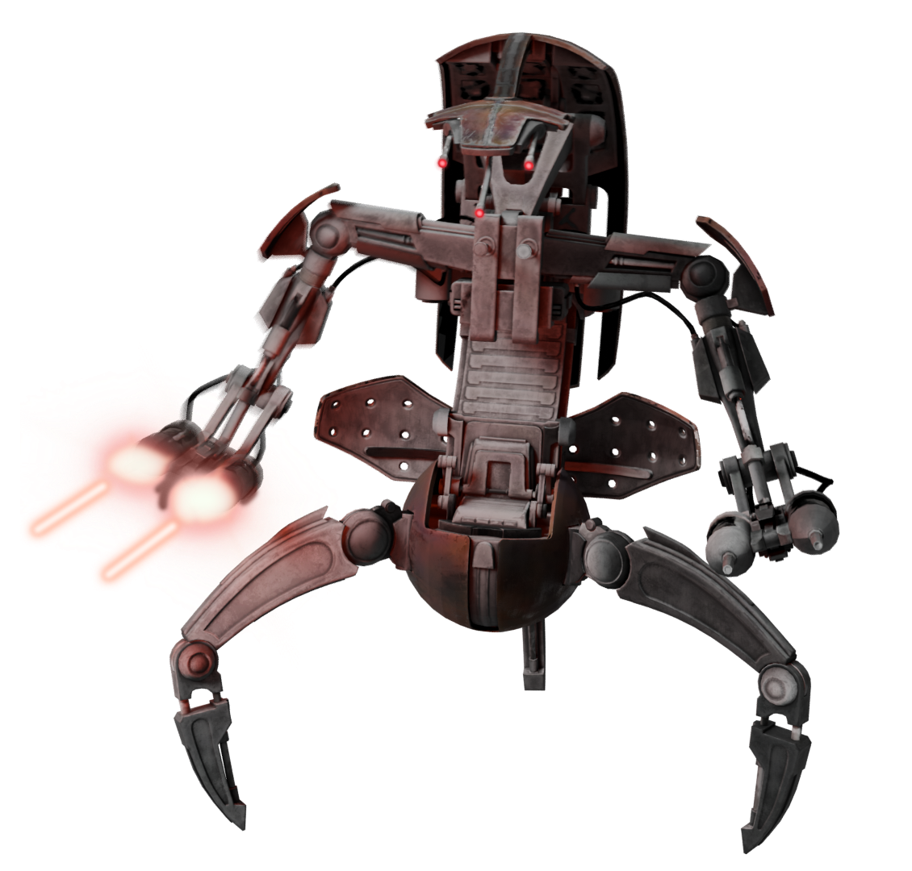

Scream in VC and run, as fast as you can.
First of all, screaming in VC distracts them, and running prevents you for your IMMINENT demise. Also run side to side UNTIL they get into rolling position!
Tip Library
Hello is this thing onnn? Oh! Hi there, I'm May, and here's some tips to be like me.

First of all, screaming in VC distracts them, and running prevents you for your IMMINENT demise. Also run side to side UNTIL they get into rolling position!
Then, you do what I did! Please review the below video!
Being like May means you WILL die to a droideka.
When I am fighting aganist a droideka and I have melee, I do not shoot, whatsoever, I melee them, and roll as fast as I can to them!
You should know this! Jump around, go side to side, use cover! Bait their shots!
Melee is the best, but don't be an idiot, shoot back if you can't get to them, OR, get a teammate to cover fire while you take a different route to them.
Heroes are strong, but a full enemy team can still delete you if you walk in without support.
I get really scared and just start spam clicking, and sometimes still win!
Run around, use your flight ability, and then SLIME them with your overpowered lightsaber.
So whaaat? Get better and pratice aganist PvE!
Kills are nice, but objectives win games. Sometimes standing in the glowing zone is the strategy.
I do get scared, yes. But I don't scream everytime I die, that's annoying.